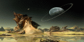

Что такое паранормальные явления ?

Паранормальные явления - явления, которые люди не могут объяснить исходя из суммы знаний, которыми они обладают на данный момент времени. Такие необычные или паранормальные явления окружают нас повсюду: необычные возможности хорошо знакомых нам людей, люди, общающиеся с кем-то или чем-то нам неизвестным, неожиданные видения, неопознанные летающие объекты (НЛО), полтергейсты, привидения, инопланетяне, полевые формы жизни, аномалии различных мест и территорий и другие явления, покрытые плотной завесой таинственности.Людям свойственно быть любопытными, это залог нашего развития. И, пожалуй, самая большая тайна на протяжении всей нашей истории развития есть ли еще другие разумные формы жизни, особенно те с которыми мы могли бы вступить в контакт, в общение на равных.
Поэтому люди пытаются разгадать тайну возникновения человеческой цивилизации на Земле, понять тайны окружающего нас космоса, тайны исчезнувших цивилизаций и их наследия.
Как хотелось бы получить доказательства, что мы не одни во Вселенной, что наши возможности не ограничиваются рамками привычного существования и мы действительно способны на большее, поскольку являемся часть чего-то очень значительного.
В древности людям было достаточно просто верить в это (а, возможно, у них были и доказательства, и свидетельства очевидцев), а нам не просто нужно верить – мы хотим понять, узнать, получить неопровержимые, материальные доказательства (правда при желании мы с легкостью сможем и их опровергнуть).
Если Вам приходилось сталкиваться с необъяснимыми, загадочными, паранормальными явлениями, событиями, способностями, у Вас есть интересные мысли, материалы, пишите и поделитесь с другими.
- | Что такое паранормальное явление?
- | Несси.
- | Шаровая молния.
- | Снежный человек.
- | Танцы на огне.
- | Сомнамбулизм.
- | Люди-лаборатории.
- | Филиппинские хиллеры.
- | Полтергейст.
- | Свет в Океане.
- | Левитация и телекинез.
- | Тайновидение.
- | Гипноз и телепатия.
- | Самовозгорание людей.
- | Порошок зомби.
- | Деревня-призрак.|
Земные аномальные зоны :
- | Геопатогеннные зоны.
- | Бермудский треугольник.
- | Жертвы Бермуд.
- | Зона молчания.
- | Магнитные аномалии.
- | Остров Сейбл.
- | Остров Колдун.
- | Нарушения гравитации.
- | Треугольник Дьявола.
- | Гора смерти.
- | Миражи Байкала.
- | Тайна плато Рорайма.
- | Шайтан-озеро.
- | Бассов пролив.
- | Локнянская поляна.
- | Остров Валаам.
- | Гиблые места автострад.
- | Шушмор.
- | Подземный мир.
- | Зона - 51.
- | Семипалатинск.
- | Остров Пальмира.
- | Хрономиражи.
- | Гора Шаста .
- | Долина смерти.
- | Зона Прейзера.
- | О Гольфстриме.
- | Багровый туман.
- | Странные озера.
- | Ворота в другой мир.
- | Поля памяти.
- | Габонский реактор.
- | Лощина Черного бамбука.
- | Пещера скелетов.|